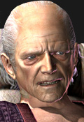
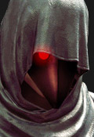
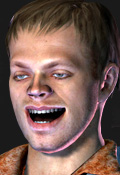
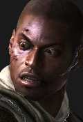
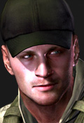
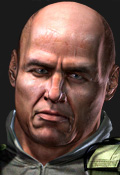
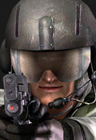
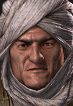
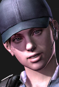

Chris Redfield, sobrevivente do incidente na mansão, segue sua luta contra o legado negro da antiga Umbrella Corporation. Vivendo agora com um grande sentimento de culpa pela morte de sua velha amiga, Jill Valentine, que foi morta em missão. Após um longo período lutando incansávelmente contra a venda e produção de bio-armas, a serviço da atual organização na qual trabalha, conhecida como Bioterrorism Security Assesment Alliance (BSAA), que age contra o bioterrorismo. Chris aparenta estar cansado de lutar, e sempre se pergunta se vale mesmo a pena lutar contra tudo isso.
Em 2009, Chris é enviado a Kijuju, uma cidadezinha situada na África, com a missão de capturar um contrabandista de bio-armas, Ricardo Irving. Aparentemente, parte do local foi infestada por um novo tipo de parasita. Ao chegar em Kijuju, Chris conhece sua nova parceira: Sheva Alomar, membro da BSAA africana. Os dois logo se tornam amigos, a ponto de Chris se lembrar do que houve com Jill, e passar a temer que aconteça algo parecido com Sheva. Mesmo assim, ele segue sua caçada, e adentra os portões que cercam a área de quarentena de Kijuju, logo sendo notado pelos moradores. Eles encontram Reynard Fisher, o contato da BSAA infiltrado na cidade, os agentes recebem suas armas que Reynard guardava. Reynard os informam da perigosa situação do local e os deixa, não antes de pedir para tomarem cuidado. Na rua, notam um morador sendo arrastado por dois homens, ao verem os heróis os agressores fogem deixando a vítima para trás. Chris então tenta socorrer o pobre homem, mas a vítima, estranhamente, o ataca. A dupla é obrigada a executá-lo. Seguindo em frente, uma macabra cena acontece: Reynard é pego pelos moradores e levado para um palanque numa praça, lá, é decaptado. Quando são avistados, Chris e Sheva agora têm de lutar contra todos os habitantes enfurecidos, que avançaram contra eles. Com a chegada do apoio aéreo, os moradores desaparecem. Logo depois, Chris e Sheva descobrem que a equipe da B.S.A.A. que chegou à Kijuju antes deles acabará de ser dizimada por uma estranha criatura, nunca vista antes.
Chris então se lembra do relatório de Leon S. Kennedy, conhecido como Relatório Kennedy, comentando um acontecimento semelhante, que durante uma missão na Europa, de resgatar a filha do presidente dos EUA, os moradores também o atacaram sem motivo, sendo obra de um parasita conhecido como Las Plagas, que deixa o hospedeiro completamente hostil. Mais tarde, durante um outro ataque de moradores, Chris e Sheva recebem o apoio da equipe Delta da BSAA, liderada por Josh Stone. Chris obtém informações sobre Irving, além de uma imagem, consistida em uma mulher muito parecida com Jill. Nas áreas minadas de Kijuju, os dois agentes acabam emboscando, Irving, que logo depois foi resgatado por uma figura encapuzada, frustrando a investida. Como retaliação, Irving liberta uma criatura voadora gigante que mais parece uma mistura de morcego com aranha. Depois de uma longa luta, o monstro Popokarimu é abatido, e a dupla continua a missão em uma grande perseguição, sendo apenas um veículo da BSAA com Chris, Sheva e um soldado contra caminhões e motos guiados pelos habitantes enfurecidos. A perseguição termina ao anoitecer, mas seria o início de outro embate, agora a dupla teria que enfrentar uma criatura gigante humanóide (também similar ao enfrentado por Leon), o gigante Ndesu.
Quando a aberração é morta, Chris decide deixar a missão de lado e ir procurar Jill, além de optar por seguir sozinho para não arriscar Sheva. Sheva, porém, decide permanecer ao lado de seu parceiro, dizendo que irá acompanhá-lo até o fim. Sendo assim, os agentes seguem até uma refinaria de óleo (local indicado por um arquivo que Irving largou durante a fuga). Lá, são auxiliados por Josh Stone, o único agente da BSAA vivo além deles. Ocorre uma implacável perseguição à Irving, até que ele finalmente é confrontado em sua embarcação. Porém, o vilão decide parar de fugir e enfrentá-los, injetando em si mesmo um vírus estranho, que lhe transformou em um monstro deformado. Mesmo assim, não foi páreo para a dupla, que derrotou Irving e o interrogaram sobre a garota da foto. Ele fala sobre Excella Gionne, presidente da Tricell, uma base militar e uma mina subterrânea. Ambos então partem para o destino, mas não encontram Jill, apenas Excella em uma grande sala, acompanhada de Albert Wesker. A misteriosa figura encapuzada reaparece, agora lutando contra Chris e Sheva. Quando um intervalo acorre, Wesker retira o capuz da figura, que se revela a própria Jill Valentine, agora sob o domínio de Wesker. Chris e Sheva consegue retirar o P4 do tórax de Jill e fazê-la retornar à consciência. Jill manda Chris ir atrás de Wesker antes de ele liberar um vírus na atmosfera, contaminando todo o mundo. Quando Excella é localizada, é traída e infectada pelo Uroboros (o organismo que Wesker quer soltar na atmosfera). A moça se transforma em um monstro, sendo inevitavelmente morta. Ao alcaçarem Wesker, uma luta acontece. Agora, Wesker tem um ponto fraco indicado por Jill: o mesmo vírus que ele usava em seu corpo, se fosse usado em excesso, faria mal ao usuário. A dupla consegue injetar em Wesker diversas doses do experimento e o vilão foge para um jato, tentando libertar o Uroboros. A dupla o alcança, e derrubam o avião em um vulcão ativo. Na luta final, Wesker se enfurece e se infecta propositalmente com o Uroboros. Chris e Sheva são separados durante a luta, e ao ver Sheva em perigo, Chris chega a empurrar uma grande rocha para chegar até ela. Wesker é dado como morto na luta, pois foi atingido por dois disparos de RPGs de Chris e Sheva, que foram resgatados por um helicóptero, com Jill e Josh dentro. Ao ver a missão completada, e ainda saber que Jill e Sheva estão a salvo, Chris finalmente obtém sua resposta: por um mundo seguro, vale a pena lutar. Resident Evil 5 se passa em um meio período no qual incidentes biológicos se tornaram mais frequentes por bioterroristas, guerrilhas e nações violentas.

.jpg)

    
   